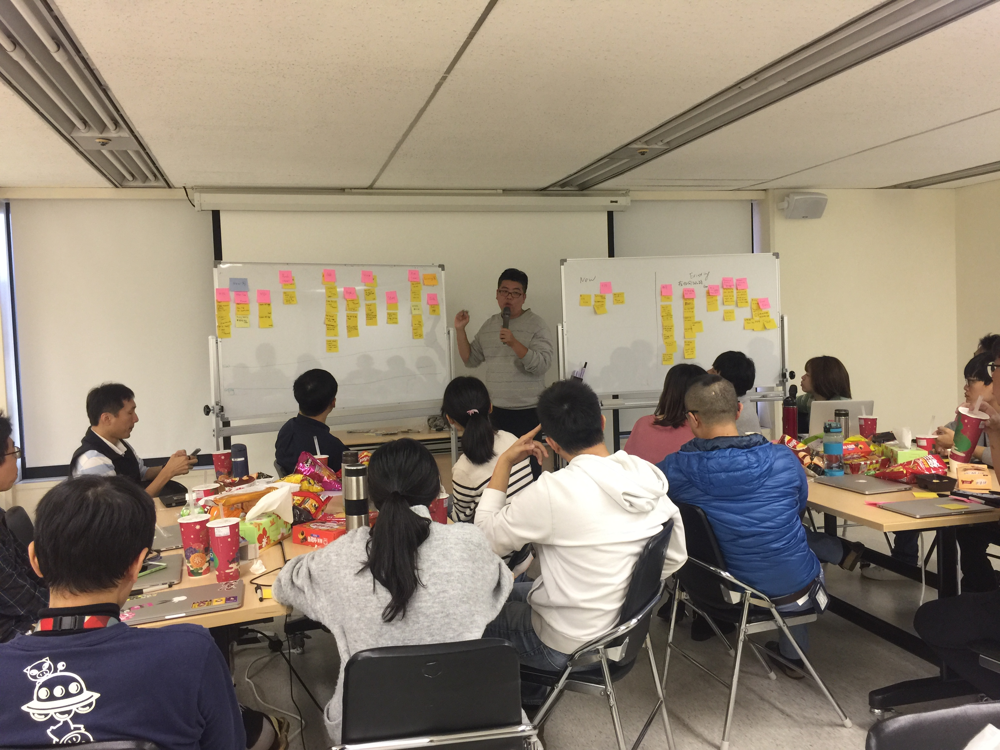
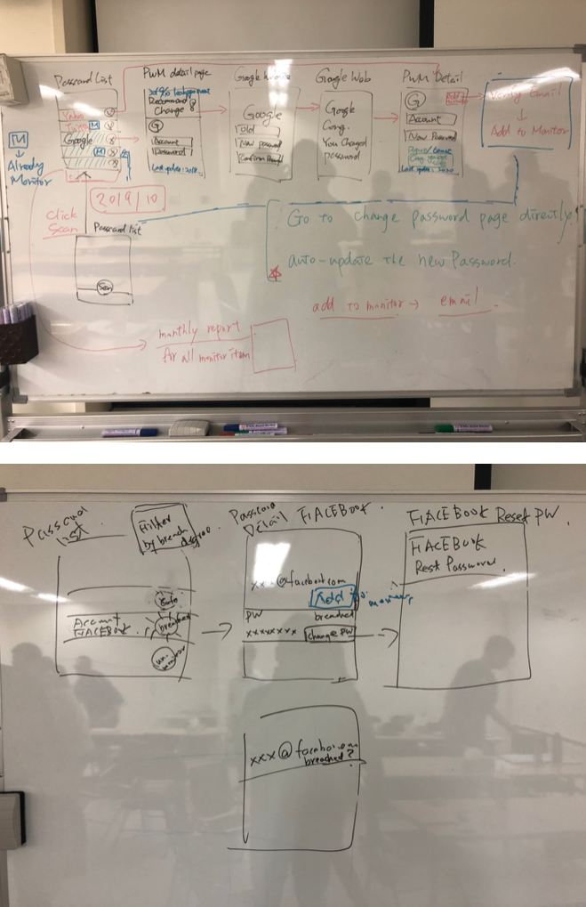
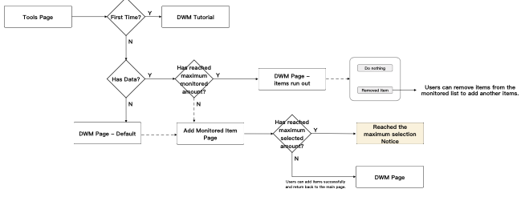
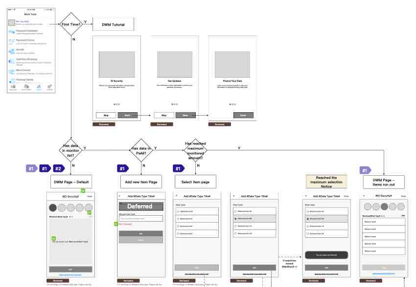
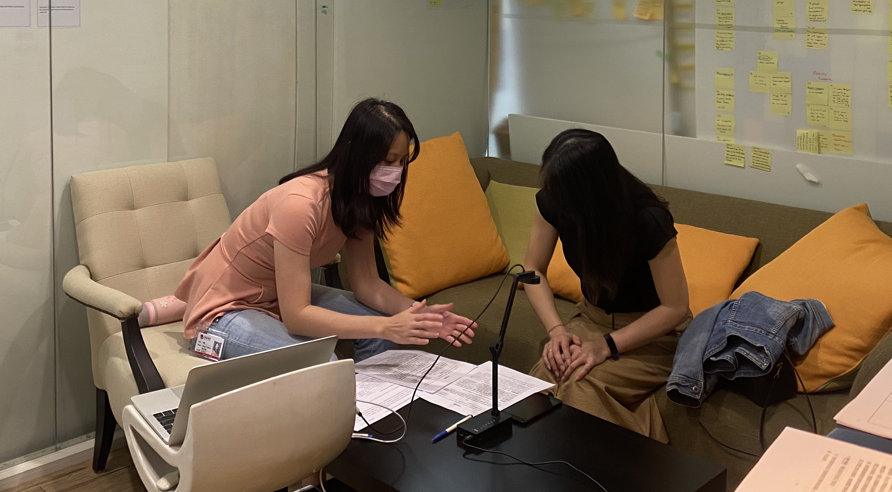
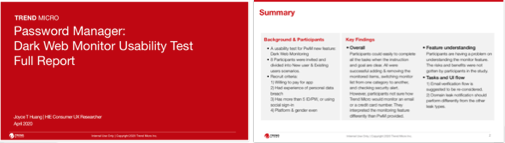
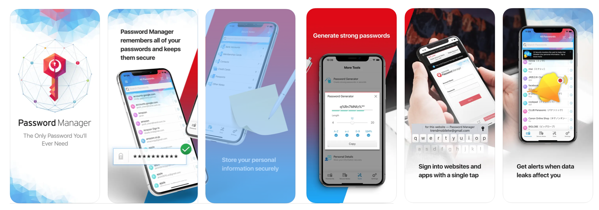

ABOUT
Trend Micro Password Manager: App/Web

SCOPE: |
Work |
|---|---|
TYPE: |
UI/UX |
DATE: |
July 2019 - Jan 2021 |
Company: |
Trend Micro Inc. |
ROLE: |
UI/UX Designer |
OVERVIEW
About Trend Micro Password Manager
Trend Micro Password Manager is a tool that can help users to store and manage their online credentials securely and safely. My main role in the project was to enhance the existing behavior and design the new add-on features.
Key features I have worked on:
- Autofill: A tool that helps users to prefill their credentials so that they can sign in instantly.
- Dark Web Monitoring: A tool that can scan the internet and the dark web for users' personal information (such as email addresses, bank account numbers, social security numbers, etc) and check whether users' data is ever leaked or not.
- 2FA (Two-Factor Authentication): A setting that reqires users to provide two or more pieces of evidence (factors) to grant access to the product. By setting 2FA, it can improve security since an attacker would need to gain possession of more factors, making cracking an account more difficult.
SKILLS
UI/UX design, wireframe/mockup, prototyping, user research, data analysis
TOOLS
Sketch, Figma, Invision
PROCESS
Background
Based on the feedback reports collected from users and partners, project manager would bring the requirements to the development team and discussed what features and enhancements should be made in each release. For example, based on user feedbacks, competitors' movement, market evaluations and partners' requirements, project manager initiated to have a strong feature that can help users to secure their personal information. One of the key features considered was called "Dark Web Monitoring".
Cosideration
Before we decided to implement the feature "Dark Web Monitoring", our team had to consider:
- the awareness of Dark Web Monitoring,
- how many users need the feature,
- whether the feature will be an attractive feature to the users,
- why people find the feature attractive,
- and how to make it better fit users' needs.
Thus, we collaborated with the reseacher to understand how our considerations could be addressed, and based on the concept validation report provided by the researcher, our team had better understanding about why the feature is important to the user and the app.
Brainstorming Workshop
As the main designer of the feature, my initiatl approach was to address the requirement from user basic needs on their personal information as well as meeting bussiness needs of the product. I had to consider:
If there is a feature called Dark Web Monitoring, what users will want?
- I can manage my passwords and personal information.
- I know it is safe to put my information.
- I can safely and quickly use my passwords and information.
- I can know immediately when my passwords and information are leaked or stolen.
- I can know what to do when leakage happens.
To better provide the solution to these considerations, I also designed a brainstorming workshop to align the team's expectation to the feature and understand how we were going to implement the feature to the current app.
 UI/UX Design
(High Fidelity Wireframes)
Based on the feedbacks, ideas and information collected from the brainstorming workshop, I proposed the design to team and discussed together about whether we addressed the considerations and evaluated the feasibilty, timeline and collaboration model and preparation before the feature was released since it would be a significant feature to the product.
 Usability Test
At the same time the development team was implement the features, the researcher and I also helped to conduct the Usabiltity Teset right after the UI(High fidelity Wireframes) spec was delivered.
The goal of this usablity test research was to identify the crucial findings before the release. If the findings are vital, then the team would review the priority, severity, schedule and scope and later determined whether we needed to fix the issues immediately or enhanced the features in the future releases.
My contribuition in this part was to quickly product a live prototype so we could use the prototype to obeserve participants' behaviors in the process and also helped to design and assist the usability test research.
Overall, the participants could easily complete all the tasks as the instructions and goals were clear. There were also some issues that we needed to resolve before release the features. The report also made good suggestion on how we could enhance in the future releases.
 RESULT
Summary
I have supported the development team for brainstorming, designing and testing the product experiences. Also, since we released the feature, we also have good feedbacks from users and partners.
